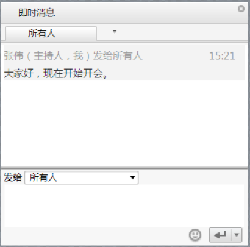

了解会议窗口
会议界面是一个虚拟的会议室，在这个会议室中，您可以执行以下操作。
- 查看会议的主持人、主讲人以及其他与会者。
- 查看主讲人共享的会议内容。
- 通过视频、语音、即时消息和其他与会者沟通。
- 通过工具栏管理会议、记录会议纪要或者录音。
会议界面主要由工具栏、视频面板、与会者列表面板、即时消息面板和会议信息组成。
工具栏
工具栏在会议界面的上方，如图所示。
工具栏中图标的功能说明，如表所示。
工具栏功能说明
|
图标 |
图标说明 |
|---|---|
|
显示/隐藏与会者列表面板。 |
|
|
|
显示/隐藏即时消息面板。 |
|
显示/隐藏视频面板。 |
|
|
开启主持人、主讲人、发言人的视频模式以及设置视频轮循和轮偱时间间隔。 |
|
|
共享文档。 |
|
|
显示更多菜单。包含笔记、录制、公告等功能。 |
|
|
|
设置桌面共享、网络控制、提示信息等。 |
视频面板
用于显示主持人、主讲人和发言人的视频画面。
与会者列表面板
在与会者列表中，您可以查看以下信息：
- 主持人、主讲人和参与者。
- 摄像头、麦克风的状态。
- 在共享桌面或者共享程序的与会者。
- 举手示意的与会者。
与会者列表中图标的说明，如表所示。
图标的显示说明
|
图标 |
显示说明 |
|---|---|
|
|
添加与会者。 |
|
|
搜索与会者。 |
|
会场已静音。 |
|
|
与会者具有摄像头，但是未开启。 |
|
|
|
与会者的摄像头已开启。 |
|
与会者正在共享桌面或者共享程序。 |
|
|
通过PC加入会议的与会者，未静音。 |
|
|
通过PC加入会议的与会者，已静音。 |
|
|
通过IVR加入会议的与会者，未静音。 |
|
|
通过IVR加入会议的与会者，已静音。 |
即时消息面板
在即时消息面板，您可以向所有与会者群发消息，也可以向单个与会者发送消息；在与会者的标签上会显示红色的数字，表示当前有多少条未读消息，如表所示。
即时消息面板

会议信息
会议信息是会议的主界面，默认显示当前会议的基本信息、数据共享、邀请用户的快捷入口。